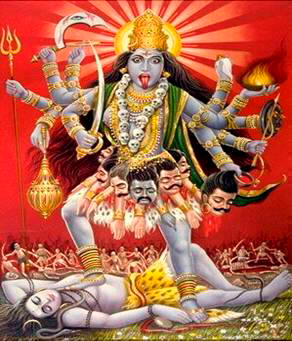

Conferência n°2
O QUE É A MORTE. O QUE MORRE E O QUE NÃO MORRE.
O desconhecimento da morte tem feito com que a maioria dos seres humanos a temam e não vejam na morte a meta e o objetivo final de tudo. Se uma pessoa compreende verdadeiramente o que é a morte já não lhe terá medo e poderá incursionar nos Mistérios da Vida e da Morte.
"A razão de viver é morrer” e não temos outra tarefa diferente a esta. Se nasce para morrer e se morre para nascer. Se o germe não morre a planta não nasce. A morte é o fim de algo. A morte libera em todos os casos.
Temos direito a retornar em 324000 corpos físicos humanos, passando pela morte física. Tudo isto se dará mecanicamente se não compreendemos a importância que tem a morte psicológica, que nos permite conseguir em uma existência a auto-realização íntima do Ser.
Vamos vendo que há três tipos de mortes, que estão intimamente relacionadas entre si e que não se poderia estudar uma sem estudar as outras duas:
- A- A Morte do Corpo Físico
- B- A Morte Segunda
- C- A Morte Psicológica
A - Estudemos o processo da MORTE DO CORPO FÍSICO.
Se inicia com um estado de catalepsia que dura 72 horas, onde aparentemente o corpo físico está morto, porém dito estado pode se suspender em qualquer momento, com o que o moribundo regressaria ao corpo no transcurso deste lapso.
Durante estas setenta e duas (72) horas sucedem três Julgamentos da seguinte forma:
-Primeiro julgamento: Nos primeiros cinco (5) minutos o desencarnado faz uma retrospectiva consciente de cada um de seus atos nesta existência, observando cuidadosamente cada evento da existência vivida e ao chegar ao instante mesmo de seu nascimento; compara a existência vivida com o plano que tinha para esta.
-Segundo julgamento: Se dá às vinte e quatro (24) horas aproximadamente, diante dos Senhores da Lei Divina. Aqui se têm em conta duas coisas:
- O peso atômico de cada um dos elementos psicológicos.
- O número dos mesmos (quantidade).
Logo se comparam estes com os que tinha o moribundo ao terminar sua anterior existência, para ver se aumentaram ou diminuíram nesta.
-Terceiro julgamento: Nas quarenta e oito (48) horas aproximadamente a Alma do desencarnado é levada ao Tribunal da Justiça Objetiva. Aqui se julgam três coisas:
- O peso das boas e más obras de cada um dos eus (atos da existência).
- O número de vezes que cada um destes elementos psicológicos se manifestou na existência.
- A medida do Fogo na medula espinhal.
Ao terminar este processo se faz a soma e resto de quebrados, que determinarão várias coisas: o Karma que esta Alma suportará em sua próxima existência e o desenho eletro-psíquico da nova personalidade, se é que tem direito a uma nova existência.
Terminado este julgamento, Anúbis, o Hierarca da Justiça Objetiva, ordena ao Anjo da Morte que corte o Cordão de Prata do desencarnado e seja liberado de seu corpo físico. Porém o Anjo da Morte pede permissão à Mãe Divina do moribundo. Se é autorizado, este leva até vinte e quatro (24) horas para cortar o Cordão de Prata com o Raio da Morte. Se a Mãe não autoriza o raio da morte, o moribundo deverá regressar ao seu corpo físico antes das setenta e duas (72) horas.
Lamentavelmente, nesta época, quase todo o mundo desconhece estes processos, antigamente conhecidos por todas as tribos e povos do planeta. E se enterram vivos os moribundos ou se os submetem a autópsias antes das setenta e duas (72) horas. Isto se evitaria se as pessoas conhecessem melhor o processo da morte e não tivessem tanto medo dela; com um velório de setenta e duas (72) horas poderia se evitar.
Uma vez atuado o Anjo da Morte se abrem três alternativas para o desencarnado:
- Que já tenha terminado suas 108 existências e sua Alma deverá ingressar na involução submersa no planeta Terra, de onde não sairá até conseguir a Morte Segunda ou a liberação de sua Essência.
- Que ainda não tenha completado suas 108 existências. Sua Alma será transladada ao Limbo onde esperará seu próximo corpo fazendo contínuas retrospectivas de sua anterior existência.
- Se trabalhou com o Fogo Sagrado e aumentou sua medida, Anúbis, o Hierarca da Lei, ordenará férias no Céu e a Mãe Divina do desencarnado o levará, lhe dará forças e instruções para que em seu próximo corpo físico, tente esta Alma, a Auto-Realização do seu Ser.
B- MORTE SEGUNDA.
Quando uma pessoa não trabalha sobre si mesma a Psique ou Alma se perde ao terminar as 108 existências. Esta Alma é levada ao Abismo, penetra os Nove Círculos Dantescos, de onde não sairá até que a natureza desintegre todos os defeitos que se criaram nas diversas existências. Depois de milhares de anos de sofrimento e decomposição, quando a Essência fique totalmente pura, se dá a liberação da mesma do Abismo. Este passo se denomina a Morte Segunda. Sai a essência totalmente liberada à luz do Sol onde iniciará uma nova evolução, começando novamente desde o reino mineral.
C- A MORTE PSICOLÓGICA
Está nos libera da constante escravidão em que nos mantém os diversos eus ou formas de ser de si mesmo.
Temos milhões de defeitos psicológicos ou pecados que se manifestam na vida diária e esgotam permanentemente nossas energias de forma desnecessária.
Há defeitos de toda classe: ira, impaciência, irritabilidade, cobiça, ambição, preocupação, engano, mentira, medo, ciúmes, luxúria, fornicação, adultério, vaidade, presunção, amor próprio, auto-consideração, auto-simpatia, sofrimento, orgulho, má vontade, desanimo, desagrado, repugnância, preguiça, ociosidade, curiosidade, roubo, trapaça, sono, mendicidade, esbanjar, alcoolismo, drogadição, degeneração, glutonaria, gula, inveja, etc., etc., etc.
Como dizia o poeta de Mântua: "ainda que tivéssemos palato de aço e mil línguas não nos alcançaria para enumerá-los cabalmente".
Cada um destes defeitos psicológicos tem presa uma pequena porção de nossa consciência, que é a que dá a vida ao defeito.
Quando um defeito psicológico morre se libera a chispa ou Consciência presa que é a parte real nele.
Se um defeito psicológico pode ser eliminado, todos os defeitos podem ser eliminados. Se podemos liberar uma chispa das trevas, poderemos liberar todas.
Onde se demonstra que com a morte se mata a morte por uma eternidade.
Se nos liberamos de todos nossos defeitos psicológicos, teremos recuperado toda nossa Consciência e integrado nosso próprio Ser, conseguindo a individualidade sagrada. Por isso dizemos que a razão de viver é morrer.
Prática da morte psicológica:
Descobrir com a auto-observação um defeito, julgá-lo com a reflexão até compreendê-lo e eliminá-lo suplicando a Mãe Divina que lhe dê morte.
Exemplo: vou pela rua e vejo uma linda moça; observo uma sensação inconfundível no centro sexual, descubro a atração no meu centro instintivo, me sinto apaixonado no centro emocional, a idealizo no centro intelectual, observo as ordens que os eus me dão no centro motor. (Isto é o auto-observado).
Reflexão: “o que é o que este eu deseja?"; "por que me atormenta?"; "o que é isto que sugere que faça?”.
Compreensões: estou fornicando em todos os centros com cada garota que me agrada; o defeito está me manejando; esqueço de mim mesmo; me identifico e dorme a consciência.
Eliminação: de cada detalhe que tenho observado e do qual me fiz consciente, se pede a Mãe Divina particular que o elimine em cada centro o desejo que estou sentindo. Este processo se pode repetir durante todo o dia a cada detalhe que se descobre.
O QUE É O QUE MORRE?
O corpo físico, o corpo vital e a personalidade são as partes que morrem ao terminar uma existência.
O QUE NÃO MORRE:
A Essência ou Consciência de cada pessoa é Imortal; Ela é o Único Real e Verdadeiro em nós; jamais morre, é a parte de Deus em cada um. Os elementos psicológicos, nos que se acham engarrafadas nossa Essência ou Consciência retornam de existência em existência e em cada uma destas se robustecem. É importante compreender que com a morte do corpo físico os defeitos psicológicos não morrem; são capturados pela Envoltura Seminal e transladados ao novo corpo até completar as 108 existências. Se não eliminamos voluntariamente ao final se desintegrarão no Abismo quando se complete a Morte Segunda.